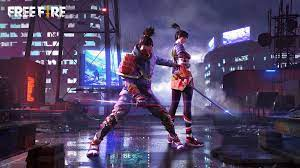
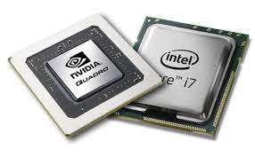
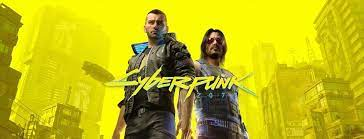

Codigos de Canje de Garena Free Fire

Como ya es conocido por los amantes del famoso juego creado por Garena y cuya Beta fue lanzada
en noviembre de 2017,
En cada temporada se liberan por parte de los desarrolladores de 111dot Studio
codigos que se pueden canjear por atributos
tanto para mejorar las armas, como tambien para personalizar
a tus personajes favoritos para hacer la experiencia de juego memorable... y lo mejor de todo...
tenemos los codigos que se liberaron este 27 de agosto!!!
Cual es la mejor combinacion de CPU y GPU para gamers?

Para muchos Gamers y amantes del desarrollo ha sido siempre muy importante tener en cuenta que procesador
y que tarjetagrafica usar para sacar el mayor rendimiento de su maquina, y es que no es para menos puesto que dependiendo
de esta combinacion se puede crear un flujo de trabajo excelente para la maquina o morir en el cuello de botella...
El Studio Indie de la semana

Muchos de los creadores y desarrolladores independientes Colombianos literalmente trabajan desde cero y con toda el alma
para materializar sus creaciones y asi poder abarcar un amplio publico objetivo en el cual buscan satisfacer la sed de diversion
y retar sus habilidades, este es el caso de Enigmatic 3D, un Studio indie situado en Barrancabermeja que cuenta con talento a nivel nacional
Que le ocurrio a Cyberpunk 2077?

Muchos de los gamers que se encontraban esperando este anhelo titulo se quedaron con las manos en la cara y asombrados al ver que PlayStation
que habia invertido bastantes millones de dolares en este proyecto, lo sacaron de circulacion despues de haber luchado contra el tiempo de cara a
un lanzamiento que no fructifico como se tenia planeado, y es que parece ser que la ambicion por sacar un producto para las fechas navideñas fue su gran
error.